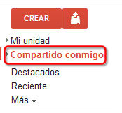
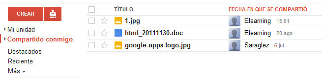

Los documentos que otras personas compartan con nosotros podremos encontrarlos en el apartado “Compartido conmigo” que se encuentra en el menú lateral. Haciendo clic sobre esta opción, veremos el listado de archivos que han sido compartidos con nosotros.
En el listado, aparece el título del archivo, la persona que lo compartió con nosotros y la fecha en la que fue compartido.
Podremos acceder a estos documentos haciendo clic sobre su nombre, como con el resto de documentos. Según los permisos que su creador nos haya otorgado, podremos editar el archivo en cuestión, comentar o sólo visualizarlo.
Podemos mover los archivos hacia "Mi unidad", pero hemos de tener en cuenta que se generará una copia del archivo, el original permanecerá en "Compartido conmigo". Si necesitamos trabajar de forma colaborativa con las personas que comparten el archivo, deberemos mantener el archivo en la carpeta "Compartido conmigo".
